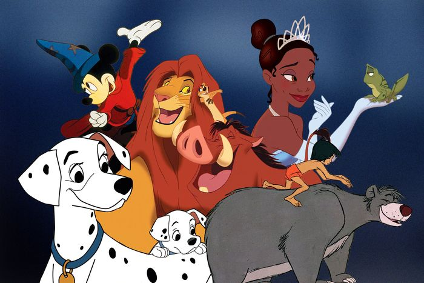

개발자로그 시작하기

일상 생활을 기록하고 데이터로 남기는 것을 "개발자로그"라고 합니다. 블로그에 작성하는 일기,
매일 먹는 것을 사진으로 찍어 남기는 것도 개발자로그의 일종입니다. 기록을 쉽게 해줄수 있는 온라인 서비스와
애플리케이션도 있습니다.
직접 기록하는 것이 귀찮다. 그럴때는 스마트폰과 웨어러블 장비를 사용하면
위치정보와 수면시간등을 자동으로 기록할수 있습니다. 체중계등의 측정장비로 클라우드와 연동되어
다양한 데이터를 기록해줍니다. 다양한 데이터를 자동으로 기록하고 관리하는 시대가 된것 입니다~